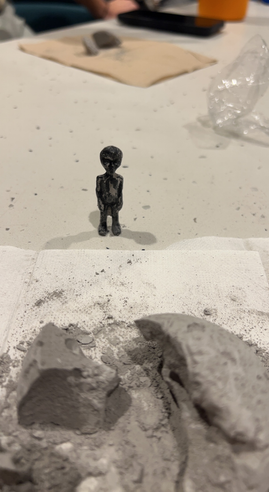

Edward Yu
I am currently a Pre-Business major at the University of California Riverside and I am planning to go into the marketing concentration. I also plan to minor in a field in the tech space whether that be digital design or computer science.
Currently my experiences in the field from an acedemic perspective include various business courses I took concurrently when I was a highschooler, as well as the business and economics classes I have taken here. With my experiences in calculus and the current ecnomics classes I am taking, I feel as if I have a general understanding for the field I am getting into. I understand the basics of how markets work, as well as how to benefit from the information markets provide.
My experiences outside of acedemics are from my endevours into the field of business in my freetime. This comes from various side hussles I have involved myself in, mostly happening in highschool. I used to buy and sell goods such as shoes and clothes to those who were willing to pay a marked up price. This taught me how to deal with sales, invetory, budget, risk, market, as well as other skills within the business world. I feel like my involvement in this small business gives me a real perspective into what it is like to be invovled in business, especially when it comes to marketing.
Experience
Side hustle
• Acquired and sold goods
• Marketed and advertised to potential consumers
• Developed relations with buyers
School TA
• Helped plan and schedule days
• Reviewed student projects
• Aided in teaching course material
Education
UC Riverside
Portfolio
